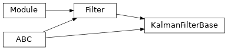

torchfilter.base._kalman_filter_base¶
Private module; avoid importing from directly.
Module Contents¶
Classes¶
Base class for a generic Kalman-style filter. Parameterizes beliefs with a mean |
-
class
torchfilter.base._kalman_filter_base.KalmanFilterBase(*, dynamics_model: DynamicsModel, measurement_model: KalmanFilterMeasurementModel, **unused_kwargs)[source]¶ Bases:
torchfilter.base.Filter,abc.ABCBase class for a generic Kalman-style filter. Parameterizes beliefs with a mean and covariance.
Subclasses should override
_predict_step()and_update_step().-
dynamics_model¶ Forward model.
-
measurement_model¶ Measurement model.
-
forward(self, *, observations: types.ObservationsTorch, controls: types.ControlsTorch) → types.StatesTorch[source]¶ Kalman filter forward pass, single timestep.
- Parameters
observations (dict or torch.Tensor) – Observation inputs. Should be either a dict of tensors or tensor of shape
(N, ...).controls (dict or torch.Tensor) – Control inputs. Should be either a dict of tensors or tensor of shape
(N, ...).
- Returns
torch.Tensor – Predicted state for each batch element. Shape should be
(N, state_dim).
-
initialize_beliefs(self, *, mean: types.StatesTorch, covariance: types.CovarianceTorch) → None[source]¶ Set filter belief to a given mean and covariance.
- Parameters
mean (torch.Tensor) – Mean of belief. Shape should be
(N, state_dim).covariance (torch.Tensor) – Covariance of belief. Shape should be
(N, state_dim, state_dim).
-
property
belief_mean(self) → types.StatesTorch¶ Posterior mean. Shape should be
(N, state_dim).
-
property
belief_covariance(self) → types.CovarianceTorch¶ Posterior covariance. Shape should be
(N, state_dim, state_dim).
-